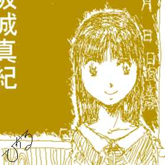
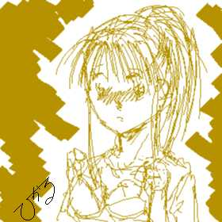

カーニバル サマー！サマー！
前編
文あんど画：ことぶきひかる
初めに
・
・
・
作者としては，まず
「４人目の姉妹」と
「ワンスモアフリースロー」を
読んでもらえると
非常に有り難い。
始まりは、高校１年の時だった。
正紀は、突然の高熱に見舞われた。
時は、５月。ようやく、高校生活にも慣れ、この季節を楽しもうとしていた矢
先のことだった。
前触れは何もなかった。
突然の高熱と全身が軋むような痛みが、正紀を苦しめた。
ようやく、熱が引き、痛みが治まったのは、２日後。
苦痛から開放された正紀は、落ちて行くかのように眠りについた。
目が覚めたとき、最初に見た者は，自分のタオルを代えてくれている母親の姿
だった。
その母親と視線が合う。
母親は、両手を口元にあて、驚きの表情をつくった。
「あなた、正紀が、目を覚ましましたよ。」
嬉しそうな中に，なぜか、妙に決意のこもった母親の声に、どたどたという，
廊下を駆けてくる音が応える。
がらりと，ふすまが開くと，その向こうには、父親の姿があった。
「正紀、気がついたか・・・」
「あ、父ちゃん。オレ、一体，どうしてたんだ。」
「ああ。正紀、お前は、急に熱を出して，３日も寝込んでたんだ。だが、熱も
下がったし、もう大丈夫みたいだな。」
だが、大丈夫という言葉とは裏腹に、父親の表情は、どこか晴れない。
「正紀，お前に話さなければならないことが有るんだ。」
いつになく神妙な面もちの父親の表情と口調に，正紀は、黙って頷いた。
「父さんの実家・・・坂城の家のことは知ってるな。」
父親の問いに、正紀は、小さく頷く。
「坂城の家は、実は、榊という家系の分家筋にあたるんだ。
そして、この榊家は、非常に、男子が生まれにくい・・・女系の中心の血筋に
なる。」
父親は、そこで、一旦、言葉を区切った。
しかし、よほど、続きが話しにくいことなのか、なかなか、口を開こうとはし
ない。
「そして、極希に、男子が生まれることがあるのだが、その全てが、１５歳前
後に，女へと性転換するということなんだ。」
「え、父さん、それって。」
「だが、本家でさえ、ここ百年以上、男は生まれても、女に変わったことはな
かった。
実際、父さんも、ご覧の通りだ。
だから、父さんも、そんな血筋は、もう薄くなって，なくなってしまったばか
りと想っていた。」
信じがたい父親の説明を、黙って聞いていた正紀だったが、不意に、その脳裏
に恐ろしい想像が浮かび上がった。
自分は、坂城の血筋だ・・・そして、男子だ。
そして、それが、意味することは！
「父さん！それじゃ、まさか、オレが？！」
「・・・そうだ。正紀。」
驚きと恐怖で、舌がもつれそうになる正紀に、父親は、淡々とした口調ととも
に、頷く。
「そ、それじゃ、父さん。オレ、オレ、女になっちゃうのかい？」
怯え、助けを求めるような正紀の声。
「ああ、その通りだ。
今回の発熱は，その初めの一歩・・・いわば、体の構造を大まかに造り替える
ためにものだったんだ。
今はまだ、女性化というより、その前段階、いわば、無性というか中性状態と
いう身体だが、この後、次第に、女性化が、進行しはじめる。」
父親の説明に、正紀は、布団を跳ね上げるようにして，自分の股間へと手を伸
ばした。
だが、指先も掌も、男ならば、必ずなければならないはずの，触り慣れている
ハズの突起の存在を捉えることが出来なかった。
「！」
引き裂かんばかりの勢いで、パジャマのズボンをトランクスと一緒に降ろし、
股間に目を向ける。
手の感触を，何かの間違いか誤解であることを期待しながら。
だが、期待は裏切られた。
股間には、なんら、突起物は存在していなかった。
厳密に言うなら、なんら，ではないのだが、今の正紀に，それを気づくだけの
余裕は存在していなかった。
高熱に，すっかり衰弱していた正紀の肉体と精神は，その衝撃に耐えることが
できなかった。
布団の上だったのは、不幸中の幸いだったかも知れない。
その身体は，崩れるようにして、倒れた。
父親が、言っていたように、正紀の身体からは、男性の性器はなくなってはい
たものの，まだ、胸の膨らみもなく、女性と言うより，細身の少年という雰囲気
があった。
「父さん，オレ、これから、どうなるんだ？」
「そうだな・・・史実が正しければ、この後、１月ほどかけて，ゆっくりと、
若返りが進み、」
「え、若返り？」
「ああ、若返りだ。１６歳の女性と言えば、もうその生殖器が順調に動き出し
ている頃だ。
だが、いきなり、そんな状態まで、生殖器を成長させたら、ホルモンバランス
などの影響でとんでもないことになる。
だから、生殖器が，発達し始める年頃、１０歳から１３歳くらいにまで、肉体
を若返らせて，そこから、ゆっくりと成長し直すことになるんだ。」
「それじゃ、オレは，小学生になっちゃうのかい？」
「・・・だいたい、それぐらいになるか・・・」
父親の言ったとおり，正紀の身長は、１日に１センチ，いや，その日によって
は、それ以上、縮んでいくようだった。
１７０センチを越えていた正紀の身長は、１月後には，１４０センチを切って
しまっていた。
それに伴い、身体は、次第に華奢なものへと変わっていった。
肩幅はせばまり、腕も臑も脹ら脛も，細くなっていく。
指も小さく細いモノへと変わり，足のサイズも、２２センチにまで小さくなっ
ていた。
身体だけではなく、顔つきも変わっていた。
元々、輪郭が整っている方だったが，若返りと共に，まず顔全体が丸みを帯び
始めた。
顔全体が小さくなったためか，瞳は，ぱっちりと大きなモノとなり，また、新
陳代謝が急激に進んだためか、髪が，急激なスピードで伸びていた。
今の正紀の外見は、１２、３歳の少女以外の何者でもなかった。
ようやく、若返りも治まった頃、父親は，再び、正紀に切り出した。
「お前の回復具合を見て，引っ越そうと想っている。
だいち、今のお前の姿じゃ、もう高校にいくわけにもいかないし、周囲の人間
に，どう説明するかということを考えれば、どこか、遠くの町で、新しい生活を
始めた方がいいと想う。」
「引っ越し・・・」
それは、仕方がないことだろう。
この格好で、今更、友達の前に出ることは出来ない。
しかし、正紀には、諦めきれないことがあった。
「あの・・・父さん。お願いがあるんだけど。」
「ん、なんだ？」
「オレ、じいちゃんの家に住むわけにはいかないかな。」
「おじいちゃんのか。」
息子・・・いや、今は娘からの意外な提案に，父親は，驚きを隠しきれない。
「こんなカッコになっちゃったから、もう、知り合いに会ったって、オレだっ
て、ばれっこないだろ。それなら、じいちゃんの家で生活したってかまわないだ
ろ。」
正紀の言葉に、父親は、しばし考え込む。
「正紀、お前、同級生か誰かに、離れたくない人がいるのか？」
「・・・」
正紀の脳裏に浮かんだのは、親友の雄二のことだった。
彼とだけは、何も言わずに別れてしまいたくなかった。
例え、それが不可能なことだとしても。
「図星か。離れたくない気持ちは、父さんにも分かる、だが、会おうと想えば
いつでも会える場所にいることが、かえって、辛いことになるんじゃないか。」
「分かってるよ。でも、オレ、このまま、この町を離れたくないんだ。」
「・・・分かった。おじいちゃん達には，父さんの方から、話してみる。」
確かに、もはや、正紀の外見は、高校生の男子ではなく、１２、３歳の少女の
ものに落ち着き始めている。
正紀本人が、話すことでもない限り，彼，いや彼女が、男子校生だと気づく者
はいないだろう。
孫・・・正確には孫娘が、同居してくれることに、祖父母には、何の異存もな
かった。
１週間後，正紀は、祖父母の家へと引っ越した。
祖父母の家の表札には、「真紀」という，正紀の新しい名前が書き加えられて
いた。
もはや、自分は、正紀という男性ではなく、真紀という少女なのだ。
複雑な気持ちで，玄関を開けた。
「こんにちわ。」
もはや、すっかり、ソプラノが混じり始めたアルトの声が、玄関に響く。
「まあ、真紀ちゃん。いらっしゃい。さ、あがってあがって。」
エプロンで手を拭いながら、玄関に姿を見せた祖母の口調は、完全に、孫娘に
対するものだった。
祖父母の家に住む際に、正紀は、いくつかの約束をさせられていた。
まず、この性転換について、誰にも洩らさないと言うこと。
もし、このような遺伝子を持つ家系があると知られたら、一体、どのような目
に会うか、分からない。
２つめは、今後は、正紀ではなく、真紀として、少女として生きていくという
こと。
当然、そこには、言葉遣いや素振りなども含まれている。
また、髪の毛は、長いままにしておくということも付け加えられていた。
髪が長い方が、より女らしく見えるからだろう。
その他にも、最低月に１度は、手紙で近況を報告することなどもあった。
「今日から、ここが、真紀ちゃんの家になるんだから，気兼ねしないでね。」
真紀は、２階に案内された。
２階の奥の部屋・・・８畳間が，真紀の部屋として用意されていた。
少し前までは、物置同然だったのだが、孫娘が同居すると言うことで，大急ぎ
で，リフォームしたらしい。
壁紙は、明るいレモンイエローに張り替えられ、床はフローリングにカーペッ
トが敷かれていた。
部屋の隅には勉強机が置かれ、それと並ぶように、洋服ダンスが並んでいた。
衣服や日用雑貨全般は、祖父母の方で用意すると言うことで，真紀は、身体１
つで，この家にやってきた。
万が一ということを考えて，少年時代のものは、全て処分されていた。
真紀が，持ってきたものは、気に入っていたコミックや雑誌などだけだ。
何という気もなしに、タンスの引き出しを開けた。
そこには、少女用の下着が、丁寧に，たたまれて入っていた。
見ては行けない、踏み込んでは行けない世界に，迂闊にも土足で踏み込んでし
まった様な気になって，正紀は、慌てて、引き出しを閉じた。
その下の引き出しには、同じく、たたまれたスカートやブラウス。
開き戸の中には，皺や折り目がついてはまずい，ロングのスカートやワンピー
スがつり下げられている。
これから先、これらの・・・女のコの服装で生きて行かねばならないのだ。
ふと、開き戸に付けられた鏡と目があった。
鏡には、どこかしら、戸惑っているような，照れているような，悲しげな表情
を向ける少女が映し出されていた。
それが、自分の顔であることはよく分かっている。
だが、それだけに、それを見た際の衝撃は，誤魔化せるモノではなかった。
鏡の中の少女の瞳が潤み始める。
真紀は、頭を激しく振って，涙を押し止めた。
こんなことで、涙を流すなど、「男」としての意地が許そうとはしなかった。
改めて、タンスの中の服を見渡す。
入っていたのは、ほとんどが、スカートかワンピースばかり。
だが、中学高校と制服のことを考えれば，スカートは、否が応でも履かなけれ
ばならなくなる。
真紀は、Ｔシャツとジーンズを脱ぎ捨てた。
鏡に映し出された少女の姿が，上半身裸の、下着１つだけというものに変わる
。
正真正銘の少女・・・まだ女の兆しが訪れていない少女の時代特有の、信じら
れないほど細く起伏の乏しい華奢な四肢。
ともすれば、あばらが見えてしまいそうな胸には、当然、膨らみといえるモノ
はない。
腰も細いものの、くびれてはおらず、ぽってりという感じの腹部の柔らかさが
、それに拍車をかけている。
（まだ、胸って、でてこないのかなあ・・・）
骨にへばりついた肉と脂肪でしかない自分の平らな胸をさすりながら、真紀は
、小さくため息を吐く。
いつまでも、裸のままではいられないので、ワンピースをとりだした。
フリルやレースなどの装飾は、襟や袖に、ほんの少しだけなのだが、やはり、
今まで、来たことのない衣服だけに、恥ずかしさは消えない。
しばし、両手につるされたワンピースをみつめていたが、いつまでも、こんな
格好でいるわけにも行かない。
胸のボタンを外し、頭からかぶるようにしてね、ワンピースに袖を通す。
鏡を見直すと、自分でも、かなりひどい格好だった。
勢いに任せて着た性で、髪が、思いっきり乱れてしまっている。
手櫛で、前髪を整えたものの、活動的なポニーテールは，可愛らしいデザイン
のワンピースとは、どこか不釣り合いだった。
（やっぱり、髪、縛ってない方が、いいのかなあ？）
そう想い、真紀は、髪をまとめていた輪ゴムを外す。
サラッとした，ほとんどクセのない長い髪が、突然伸びてきたのではないかと
錯覚しそうな勢いで、ほどけ、身体にかかる。
クセのない細い髪は、空気の抵抗すら受けていないかのように、真紀の身体に
まとわりついた。
それと同時に、鏡の中の少女の雰囲気が、がらりと変わった。
それまで、スカートこそはいているものの，下着が見えるのも気にせず走り回
ってしまいそうなアクティブな元気っ娘をいうイメージだったのが、突如、図書
館か木陰で，詩集でも読んでいるのが似青そうな，線の細い少女が、鏡に映し出
される。
子供服のＣＭやポスターの依頼が来そうな，可愛らしく，そして繊細で，にも
関わらず、生気に満ち、活気溢れる，魅力的な少女だった。
自分の姿にも関わらず、そのあまりの変わりように、真紀は、息を呑んだ。
「こ、これって、本当に、ボクなんだろうか・・・」
鏡の中の少女の唇が，真紀の言葉を追うようにして動く。
それが鏡である以上，そこに映し出されている少女が、今の自分の姿であるこ
とは、否定しようのない事実だった。
自分が、本当に女に・・・少女になってしまったという証拠を叩きつけられ，
真紀は、呆然となるしかなかった。
全身の力が抜け、その小さな身体が，カーペットの上に、降りる。
数分後、どうにか，自分を取り戻した真紀は、腰から脹ら脛にかけて、妙に風
通しがいいことに気づいた。
スースーする、その感触は、なにか、裸でいるようで落ち着かない。
半ズボンなどとは、明らかに異なる感触・・・
「スカートか・・・やっぱり、なんか、落ち着かないなあ・・・」
子供用のワンピースでスカートの丈がかなり短いためのあるのだが、それは、
下半身下着１つでいるかのように、落ち着かず、頼りなく、そして恥ずかしかっ
た。
「慣れるしか・・・ないんだよな・・・」
真紀は、誰に言うとでもなく，そう呟いた。
それから、数日間，真紀は，恥ずかしいのと、脚と腰がスースーするのを我慢
して、スカートで過ごしてみたが，やはり、そう簡単になれてくれるモノではな
いらしい。
とはいえ、用意されていた服は全てスカートばかり。
意を決して、真紀は、祖母に相談した。
「ね、おばあちゃん・・・」
「あら、どうしたの。真紀ちゃん。」
正紀に対する祖母の態度や口調は、孫娘・・・それも小学生に対するものにな
っている。
実際、今の正紀の外見は、小学生の少女なのだから、祖母の態度も無理はない
ことなのだが、正紀にとっては、かなり屈辱的なことだった。
もっとも、祖母に悪気はないことは分かっているので，それを表情に出したり
はしない。
「ね、おばあちゃん。ボク、スカートじゃなくて、他の服が欲しいんだけど。
」
流石に、自分のことを「あたし」と呼ぶことには、抵抗が有りすぎたので、正
紀は、まだ、自分のことを「ボク」と呼んでいた。
小学生くらいなら，まだ、「ボク」と自分のことを呼んでも、それほど違和感
も問題もないだろう。
いずれ、「あたし」と言わなければならない日が来るかも知れないが，それま
でには、その言葉に慣れることが出来るだろう。
「だって、真紀ちゃんは，女のコなんだから，スカートは、当たり前でしょ。
」
「でも、スカートは、動きにくいから、なにか、ズボンみたいなモノも買って
よ。」
執拗な説得とおねだりの末、真紀は，どうにか、何着か、キュロットスカート
やスパッツを買って貰った。
結局、それが、そのまま，真紀の普段着になった。
５月の終わり・・・正紀，いや真紀は、小学校に６年生として転入した。
肉体年齢的には、中学１年生として、通らないわけでもないが，中学生となれ
ば、もう，男女の差がはっきりしてくる。
まだ、「女」という立場と位置になれていない真紀が，そこに馴染めるかは不
安が大きい。
だが、小学生ならば，６年でもまだ、男女間の境は、曖昧だ。
少年ではなく少女としての自分に慣れるための緩衝期間として、真紀は、１年
足らずではあるが，小学生として過ごすことを決めた。

転入のその日、真紀は、祖父母への手前もあるので、恥ずかしいのをガマンし て、髪の毛をおろして、薄いスカイブルーのセミスリーブのワンピースを着てい った。
胸が膨らみ始めたことに気づいたのは、６月も折り返そうという頃だった。
体育の時間、中距離走で、胸に触れる体操服の感触に、軽い痛みとむず痒さを
感じた。
体育が終わり、着替えようとした真紀は、自分の胸が，膨らんできていること
に・・・肉がたるんできているとかではなく、盛り上がろうとするように膨らん
できていることに気づいた。
「え？」
脱ぎかけた体操服を，慌てて，着直す。
既に、その顔は真っ赤になっていた。
「あれ、真紀ちゃん。早く着替えないと、授業始まっちゃうよ。」
そばで着替えていたショートヘアの、やはり活発そうな少女が、声をかけてく
る。
「あ、優ちゃん。」
「どうしたの、真紀ちゃん。」
「あのぁ・・・優ちゃん，ブラジャーとかって、どうしてるの？」
「え、真紀ちゃん。まだ，ブラ、してなかったっけ？」
「うん、ボク、まだ、胸、ちっちゃすぎたから，いらないと想ってたんだけど
。」
「そんなことないって。ちゃんと、ブラ付けてないと，将来、形が悪くなっち
ゃうんだって。」
「そ、そうなの？」
「そうだよ。だから、早く、買っておかないと。」
「う、うん・・・」
「そうだ。今度の日曜日，一緒にデパートいこうよ。」
「え、一緒に・・・」
仲がいいとはいえ、女の子と一緒に下着を買いに行くと言うことは，まだ，男
としての意識が強い真紀にとっては，かなり恥ずかしいことだったが、祖母と一
緒よりは、まだマシなような気がした。
「う、うん。それじゃ、優ちゃん。一緒に，行ってくれる？」
「うん、それじゃ、後で。」
買いに行くという約束をしたものの，金銭的なモノとなると祖母に相談せざる
得ない。
とはいえ、やはり、祖母に、下着がらみのことを話すことは恥ずかしかった。
土曜日の午後、真紀は、思い切って、祖母に打ち明けた。
「あの・・・おばあちゃん。」
「あら、真紀ちゃん、どうかしたの？」
「その・・・ボク，そのブラ，買いたいから、お小遣い貰えないかなあ・・・
今度、友達と一緒に買いに行くって約束しちゃったから・・・」
真っ赤になった真紀の顔を見る祖母の目が細くなる。
茶箪笥から財布をとりだした祖母が、真紀に渡したのは、壱万円札が２枚に５
千円札が２枚。
最初は枚数がいるとはいえ，下着を買うには、多すぎる金額だ。
少し怪訝そうな顔をした真紀の心を察したように，祖母は
「ついでに，ブラだけじゃなく、他のお洋服も買ってらっしゃい。いつまでも
、おばあちゃんが、買ってくるわけにもいかないから、慣れておかないとね。」
そういいながら，祖母は、お札を、真紀に握りしめさせる。
確かに祖母の言うとおりだった。
いずれ、自分で、下着だけではなく、衣服も選ばなければならないときが来る
。
日曜日、回転と同時に、真紀と優は、デパートの下着売場に，やってきた。
「あ、すみません。ブラジャーのサイズ，計ってもらえますか。」
いつもは、活発な真紀だが、今日ばかりは、優が主導権を握っている。
早速、店員に声をかける。
「はい、ブラジャーですね。」
ようやく、ブラが必要になったばかりという雰囲気の少女２人に，店員の表情
が和む。
もう１人店員をよびよせ、そちらに優を任せると，真紀を、試着室に誘った。
「さあ、服を脱いでくださいね。」
「え、服、脱ぐんですか？」
「薄着だから、脱がなくてもなんとかなるんですけどね。ただ、正確に計って
おいたほうがいいのよ。サイズが合わなかったりすると、形が悪くなったり，肩
こりになったりしますからね。」
店員に説明され、真紀は，やむなく、Ｔシャツを脱いだ。
相手が、女性とはいえ，自分の裸体を見られてしまうことに，恥ずかしさがあ
ったが、ガマンするしかない。
「それじゃあ、計りますよ。」
「ひゃっ」
背中にあたったメジャーの冷たい感触に、想わず声が出てしまう。
「はい、ちょっと動かないでね。」
店員はメジャーの位置を変えて、何カ所かを計り直す。
「はい、おしまい。サイズと言っても、まだよく分からないでしょうから、い
ま、いくつか、持ってきますからね。」
結局、その日、真紀は、５枚のブラジャーを買った。
いずれも，何の装飾もない，小学生らしい，シンプルなデザインの白のブラだ
。
店員の説明では、ブラジャーのサイズは、ＡとかＢだけではなく、トップとか
アンダーとかいうものもあるらしい。
（女のコの胸って、結構、複雑なもんなんだなあ・・・）
帰りのバスの中、店員に説明されたことを、頭の中で反芻しながら，真紀は、
今の自分が、その女のコに他ならないことを想い出した。
いずれ、下着だけではなく、化粧とか、いろんなおしゃれの必要性が出てくる
。
それを考えただけで，真紀は、少し頭痛がしてきた。
家に帰ると、真紀は、部屋に駆け戻り，買ってきたばかりのブラを、広げてみ
た。
店員に、付け方も教わってきたのだが、いざ自分１人で付けてみるとなれば、
かなり勝手が違うだろう。

慣れないうちは、ホックを前で止めて、それから前後を入れ替えさせて、スト ラップをかけるといいと教わったので、その通りにやってみる。
少女となって，初めての夏、そして夏休みが来た。
心と記憶は、正紀・・・あくまでも１６歳である真紀にとって、小学生の宿題
など，ものの数ではない。
夏休み３日目で、宿題の７割方を終わらせ，後は、自由課題と日記を残すのみ
で，真紀は、少々、時間を持て余していた。
まとまった余裕が出来たためだろうか。
不意に、親友の雄二、そして体育館脇のバスケットのゴールのことを想い出し
た。
ストリートバスケットが流行った頃に、市民体育館の外壁に取り付けられた，
バスケットのゴール・・・
暇が有れば、２人で、練習したモノだ。
雄二は、今でも，あそこで、練習しているのだろうか？
ふと、気になって、真紀は、体育館へ行ってみることにした。
ようやく、陽が西に傾きかけた時刻だけに、まだ気温は高い。
体育館脇についた頃には，真紀は，汗をかいていた。
ボールが、リングに当たる音，アスファルトに弾むが聞こえてくる。
人の気配は多くない・・・多分、１人だけ・・・まず間違いなく雄二だろう。
（遠くで、見るぐらいなら、いいよな。いくら雄二でも、今のボクが、正紀だ
なんて、気づくはずないし・・・）
そう、自分に言い聞かせると、正紀は、体育館の脇に，脚を忍ばせる。
壁から、そっと顔だけを出して、様子を伺った。
シュートされたボールは、リングに跳ね返ったり，その上を１周して落下した
りで、なかなか、その中をくぐろうとはしない。
（相変わらず、シュートが下手だな。）
真紀は、自分がまだ男で、小学６年生の時の、町対抗のバスケットの大会を想
い出した。
点数は、６１対６０。
雄二は、フリースローのチャンスを得た。
残り時間は後わずか。これを決めれば、同点で、フリースロー対決に持ち込め
る。
４人の味方と５人の敵と審判と観客が見守る中、円弧を描いて宙に飛んだボー
ルは、リングの外側に落ちた。
結局、その試合に負けた悔しさが，雄二をバスケットにのめり込ませることに
なったのだが。
そんな真紀の心中を知ってか知らずか、雄二ののシュートは、一向に決まらな
い。
シュートが決まらない事への苛立ちもあり、真紀は、こっそり，様子を伺うつ
もりが、いつの間にか、身を乗り出していた。
「ねえ、バスケット、やってるの。」
ほとんど、無意識のうちに，声が出てしまった。
雄二の動きが一瞬止まった。
まずい。
身を隠そうとした、その時には、雄二は、正紀の方へと振り向いていた。
逃げたら、かえって怪しまれる。
この姿の自分を見ても，まず正紀だとは気づかないだろう。
そう判断した真紀は、たまたま通りかかった少女の振りをすることにした。
「ね、ね，ボクもやりたいから、相手してよ。」
複雑に考えるより先に、身体が動いていた。
体が小さくなった分、四肢のリーチは縮まっているが、体重が軽くなった分、
瞬発力や、運動性は上がっている。
事態を把握し切れていない雄二の手から、ボールをカットすると，そのまま、
ドリブルで、ゴール下からシュートする。
リングで、２，３回弾んだ後、ボールは、その中を通過する。
こちらが、それなりの技術を持っていることが分かったのだろう。
雄二は、デフェンスを姿勢をとる。
身長が、１４０センチにまで縮んでしまった真紀と、１７０センチを越える雄
二とでは、バスケットでは，そもそも勝負にならない。
途端にシュートが決まらなくなるが、それでも、真紀は、雄二の隙を狙って、
ゴール下に飛び込もうとする。
時刻は、夕方に近づいていたが、まだ気温は高い、
２人は、ぐっしょりを汗をかいていた。
「おい、そろそろ、一休みしようぜ。」
「うん！」
無意識のうちに、元気な声が出ていた。
数分後、２人は、日陰の縁石に腰を下ろして、ジュースで、喉を潤していた。
もちろん、雄二のおごりだ。
「自己紹介まだだったね。ボク、真紀。坂城真紀。」
「あ、オレは、雄二。井堀雄二。」
「雄二か・・・じゃあ，雄二お兄ちゃんだね。」
雄二と，直接呼んでしまうと，正紀の立場として、雄二に接してしまいそうで
、真紀は、慌てて，「お兄ちゃん」を付け足す。
雄二の方も、初対面の少女に，いきなり「お兄ちゃん」と呼ばれたことに驚き
を隠せないようだったが，その表情からして，悪い気はしていないようだ。
雄二の鼻の下が、少し伸びていることに、真紀は気づいた。
「ねえねえ、雄二お兄ちゃんは、なにかクラブでもやってるの？」
何という気もなしに、真紀は、その言葉を口にした。
小学校からのバスケ好きの雄二のことだ。
高校でも、続けているに違いないと想っていた。
「高校の部活には入ってないけど，市のサークルには、入っているよ。」
部活に入っていないと言う雄二の返答は、真紀に軽い衝撃を与えた。
（まさか、オレが、いなくなったせいで・・・）
自意識過剰な考えかも知れないが、真紀の心の中に，正紀としての罪悪感が広
がった。
「サークルかあ・・・ねえねえ、ボクも，入れて貰えるかなあ？」
そういったのは、そう深い考えがあってのものではない。
正体がばれそうにない以上，どうせなら、雄二と同じサークルでバスケットが
したいと想ったからだ。
「いや、サークルったって，勝ち負けより、好きで集まってる連中だから、多
分問題ないと想うけど，みんな，オレより年上ばかりだぜ。真紀ちゃんは、学校
で仲間を見つけた方がいいじゃないか。」
「だって、他の女の子は，バスケなんかやりたがらないし，男子は、ボクなん
か，仲間に入れたがらないし・・・」
これは、本当の話だった。
流石に、小学６年生となると，少しずつではあるが、男子も女子も、互いに相
手のことを、異性として意識し始める。
ただ、この年頃は、半端に知識とプライドが育つ時だけに、その関心を素直に
表現することが出来ないものだ。
好きなコに意地悪をしてしまうととか、気になるクセに，ついつい、見栄と照
れも手伝って、相手を疎遠にしてしまう。
本人は自覚していないものの，けっこう美少女の真紀では，そういった傾向が
強くなるのも、当然かも知れない。
「そうか・・・じゃ、一応、サークルの責任者に聞いてみるよ。で、返事は、
どうしようか？」
雄二の言葉に、真紀は、しばし考え込んだ。
「うーん・・・じゃあ、１週間後、またこの場所この時間でってことにしない
？」
「真紀ちゃんが、よければ、それでいいけど。」
その日の夕方まで、２人は、フリースローや一対一の練習を、楽しんだ。
約束の日、その日は、朝から雨だった。
夏の雨は、湿度が高いせいか，髪の毛が重く感じられ，鬱陶しいこと，この上
ない。
こんな雨の日では，雄二は、来てくれないかも。
いや、もしかしたら、約束そのものを忘れてしまっているかもしれない。
そうでなくても、たまたま出会っただけの見知らぬ少女との約束なのだ。
とはいえ、もし、きていたら・・・という思いも、否定しきれなかった。
小学生には少し大きすぎる傘をさすと、、真紀は、体育館脇へと足を向けた。
約束の時間より、大分早くついたためか、ゴール下には誰もいない。
１５分ほど待っただろうか。
傘を差した人影が近づいてくるのが見えた。
「あ、雄二お兄ちゃん！」
無意識のうちに，表情が明るくなる。
「あ、真紀ちゃん。来てたのか。」
少し驚いたような、それでいて嬉しそうな雄二の表情。
真紀も、サークルからの返答以前に、約束通り、雄二が来てくれたことが嬉し
かった。
「約束だもん。来てるって。で、どうだったの？」
「ああ、取りあえず、参加するのは問題ないんだけど，うちのサークル、終わ
る時間が結構遅くなるんだ。真紀ちゃんは，まだ小学生だろ。それが，困りもん
なんだ。誰か、送り迎えしてくれればなあ・・・」
「雄二お兄ちゃんが，送ってくれるんじゃないの？」
「え、なんで，おれが？」
「じょーだん。冗談だよ。でも、そこまで、嫌がる事って無いんじゃない？」
真紀は、雄二を非難するように、少し頬を膨らませて見せた。
「ご、ごめん。そういうつもりじゃあ・・・」
「じゃあ、かわりに、うちに説明に来てね。ボクが，話しただけじゃ、おじい
ちゃん達，納得してくれないかも知れないから。」
「おじいちゃん？それじゃあ，真紀って・・・」
両親がいないなんて，まずいこと聞いたなあ。という風に，雄二の表情が、後
悔混じりになる。
それに気づき、真紀は，慌てて、言葉を繋いだ。
「あ、そうじゃない。そうじゃないの。お父さんが転勤で，お母さんも一緒に
行っちゃたから、ボクは、おじいちゃんの家にいるだけってこと。」
真紀の説明に、雄二の顔にほっとしたモノが広がる。
真紀にしてみても、雄二から同情混じりの優しさをかけられるのは真っ平だっ
た。
同情は，所詮、優越感の裏返しに過ぎない。
雄二との間に，そのような感情が存在することには、耐えきれなかった。
「でも、悪いと想ったら、絶対、おじいちゃんに、うんと言わせてね。」
雄二が説明に来てくれたことで，祖父母の了承は、すぐに得られた。
シューズやソックスを揃え、翌週から、早速，練習し参加し始める。
「へー、このコが真紀ちゃん？」
「坂城真紀です。どうぞ、よろしくお願いします。」
「いや、こっちこそよろしくな。」
「ふーん、これが雄二のガールフレンドか。」
「ちょっと待ってくださいよ。オレと真紀ちゃんは知り合ったばかりで、そう
いうもんじゃ・・・」
メンバーの冷やかしに，狼狽する雄二を見ていると，真紀の中に悪戯心がわき
上がってくる。
「そーそー、ガールフレンドじゃなくて、恋人だもんね。」
「え？」
「ま、真紀ちゃん！」
真紀の想わぬ言葉に，雄二の顔が，蒼白になる。
「おー、雄二。お前、やっぱり・・・」
サークル代表の目つきが冷たいものになった。
「信じてくださいよ。オレは、そんなこと。」
「そんなことって，どんなこと？」
真紀の、追い打ちをかけるようなツッコミに、体育館に、雄二を除くサークル
の笑い声で満たされる。
雄二が言っていたように、勝ち負けではなく、バスケットをすること自体を楽
しもうと言う集まりだけに、小学生である真紀の体格も、さしたハンデにならな
かった。
活発な性格な真紀だけに、クラス同様、サークルに溶け込むのにも、たいして
時間を必要としなかった。
そんなある日のこと，女性メンバーの１人が真紀に声をかけてきた。
「ね、真紀ちゃん。その髪、邪魔にならない？」
「え・・・」
確かに、その通りだった。
以前から、少し気になっていたのだが。歩にテールにしても、まだ長めの髪は
，瞬間的に激しく動いたときなど，耳や顔に当たって，かなり痛いことがあった
。
「ちょっと、座ってみて。編み上げてあげるから。」
真紀は素直に、ベンチに腰掛ける。
「わあ、真紀ちゃんて、綺麗な髪・・・羨ましいなあ。」
早速、真紀の髪を梳かし始めた女性は、感嘆の声をあげる。
「え・・・そうなんですか？」
長くて、サラサラの髪であることには気づいていたが，羨ましがられるほどの
ものだとは、想ってもみなかった。
「美喜ちゃん、気づいてなかったの？・・・下手に、いじっていない分、かえ
って、きれいなままなのかもしれないね。」
女性は、頭の両脇で三つ編みに編み上げ、それをお団子にまとめ上げる。
髪と一緒に顔まで引っ詰められたような感じはあるが、左右に振れるものが無
くなった分，かなり頭が軽くなった気がする。
「さ、出来上がりっと。どう、真紀ちゃん。」
「うん、なんか、頭が軽くなったみたい・・・あれ？」
いつのまにか、他のメンバーも、その周りに集まって、真紀の髪型を鑑賞して
いた。
その中には、当然、雄二の姿もある。
「ね。ね、雄二お兄ちゃん。似合う？」
「え、あ、う、うん、似合ってる。可愛いよ。」
「ホント？！わあ！！」
真紀は歓喜の声をあげながら、飛び跳ねた。
無邪気に喜ぶ真紀の姿に、メンバーの表情が和む。
しばらくの間、コートの中を駆け回っていた真紀は、不意に、異変に気づいた
。
後ろから抱きしめられたかのように、胸が締め付けられたような，どこか呼吸
が苦しくなるような・・・
（え、あれ、ボク、どうしたんだろう。雄二に、可愛いって言われただけで、
こんな気分になるなんて。）
「どうした。真紀ちゃん？」
真紀が、不意に立ち止まったことに，雄二が，少し心配そうに声をかけた。
「う、うん、なんでもない。なんでもない。」
そう応える真紀の口調は、どこか歯切れが悪かったが，雄二は気づかなかった
ようだ。
（急に駆け出したりしたから，苦しくなっただけだよ・・・うん、そうに決ま
ってる。）
どこか納得のいかない納得できない答えを、真紀は、まだ，胸の苦しみが治ま
りきっていない自分に無理矢理押しつけた。
カーニバル サマー！サマー！ 前編 終
予告ばかりが、さんざん先行した
「ワンスモア フリースロー」
のサイドストーリーあんど続編
「カーニバル サマー！サマー！」
遂に、アップしました。
といっても、まだ前編ですが・・・
「妖魔城の寵姫」では、長編の余り、読者の方も，
かなり苦労したということですし、
今回も、６０ＫＢ突破は、ほぼ間違いなし。
ということになったので、
スパッと、前後編に分けることにしました。
そのため、続編部分は、後編に回ってしまいました。
期待していた方，済まぬ。
「ワンスモア〜」では、雄二の視点から
話を進めたのに対し、今回は、真紀の視点で話を進めてみました。
「ワンスモア〜」では、雄二の視点故に、
描ききれなかった部分，説明不足になってしまった部分が
あったものでしたから。
結果オーライとはいえ，
正紀が真紀へと変わる際の
感情の変化などが描写できて
とっても、ハッピーでした。
続きでは、更に萌えるシーンも出てくるかもしんない。
さて、どうなる？
あたるも八卦あたらぬも八卦の後編予告
真紀の身体に訪れた新たな異変・・・
それと前後して、真紀の心の中に新たな感情が芽生え始める。
だが、ふとしたことから、真紀は、雄二に，正体を感ずかれそうになり・・・
そんなわけで、
続編をお楽しみに！！